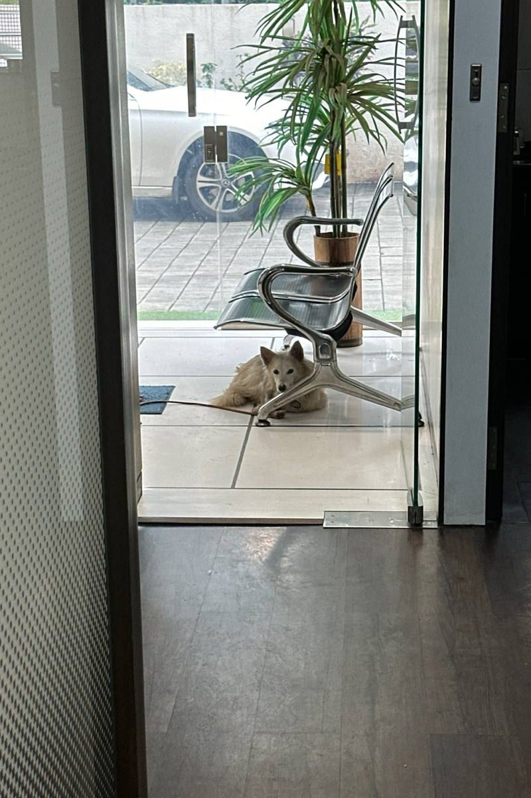
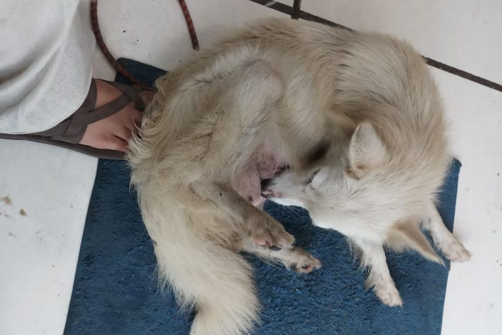
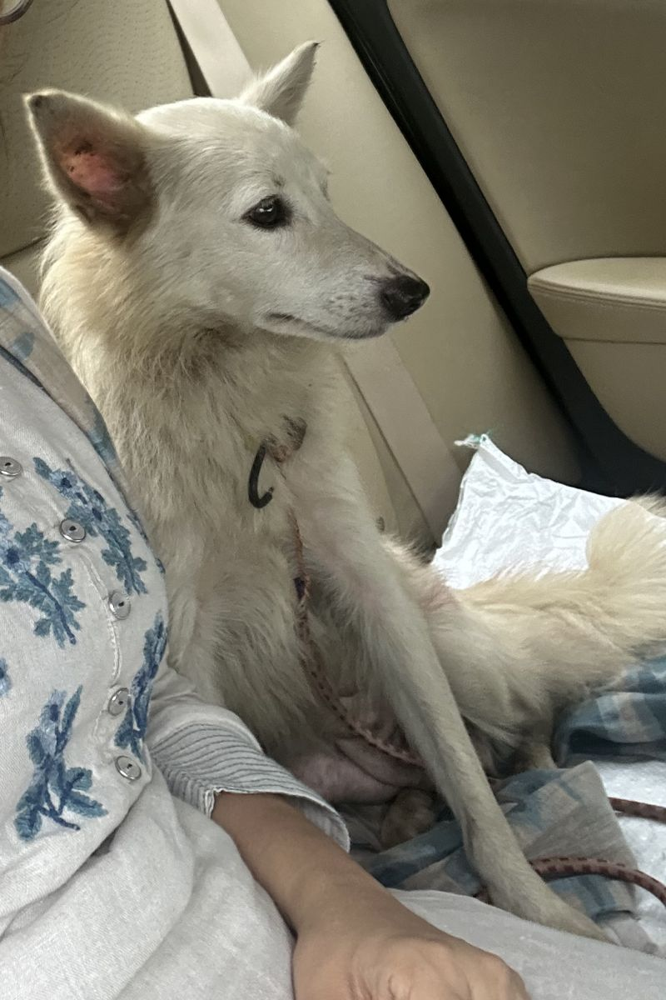
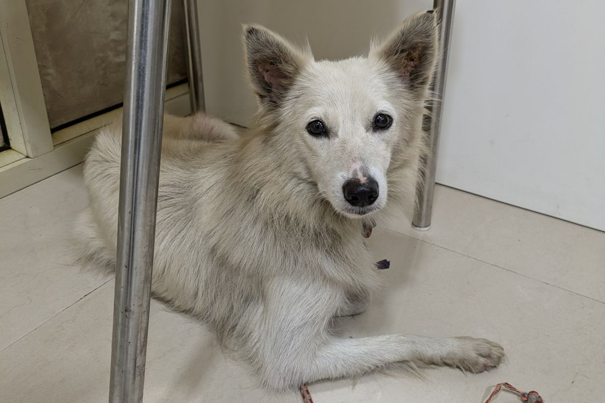
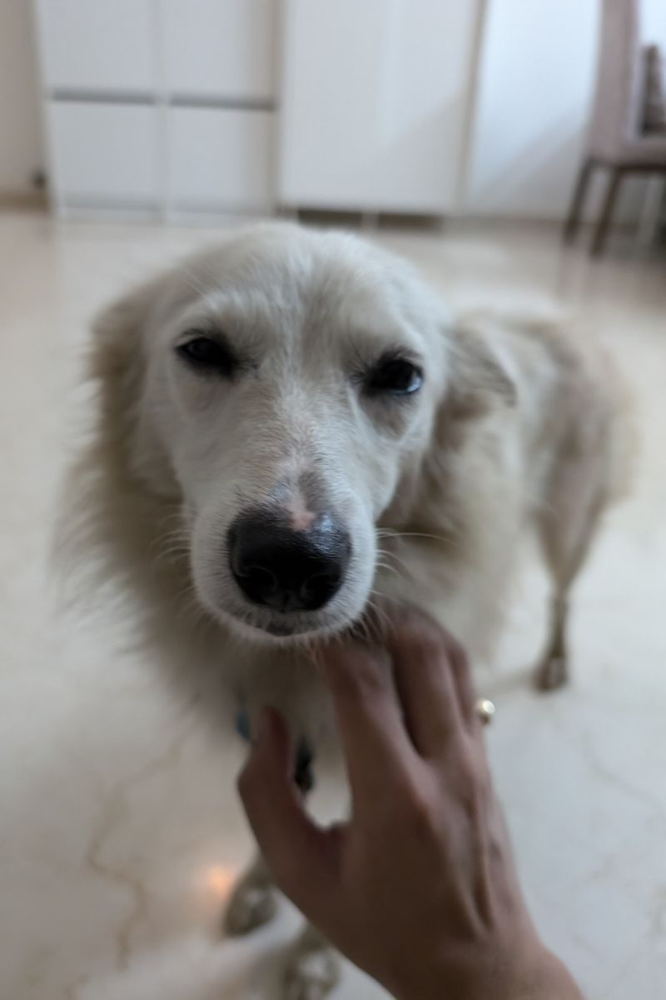

This is Ella. We found her on the street in Goregaon (Mumbai) in late July 2024. She was fearfully trying to scavenge from the trash heap while she dragged a six foot leash, suspended from an invisible collar made of a thing nylon rope. She looked exhausted and hungry. The people nearby said that she's been roaming around here, following trash pickers, being shoo'd by them for two days. We approached her, she was friendly. We picked the leash up and let her lead us. She walked, to nowhere, seemingly in search of food so we took her in (into our office) for the afternoon while we weighed our options.
We offered food and water and she readily fed. She went on to find a safe place to rest and seemed calm.
She had a little body and still seemed thin for her size, she and had certianly been a mother, probably recently. She was probably a spitz or siptz indie cross. She wasn't very dirty, and didn't have the smell dogs which street dogs have during monsoons, she was quite dry, and it hadn't rained heavily only since a couple of days. This mean that she was probably a home dog and was either lost or abandoned. We decided to take her home.
 The vet concluded that she must be four to five years old, and has likely been abandoned after she puppies were born. She was likely a Pomeranian, and given her docile behaviour, was likely in a lot of trauma. The medical stuff was concerning but not complicated and with luck, she'd be healthy in a few weeks.
Her liver is slightly enlarged, and her platelets are low. She probably has a tick-flea related infection. Given this she is on a liver tonic and antibiotics for the next three weeks. She is taking up on us and her new home very well.
